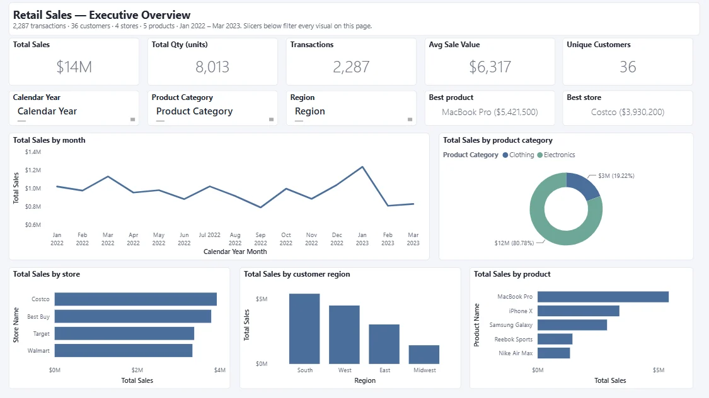
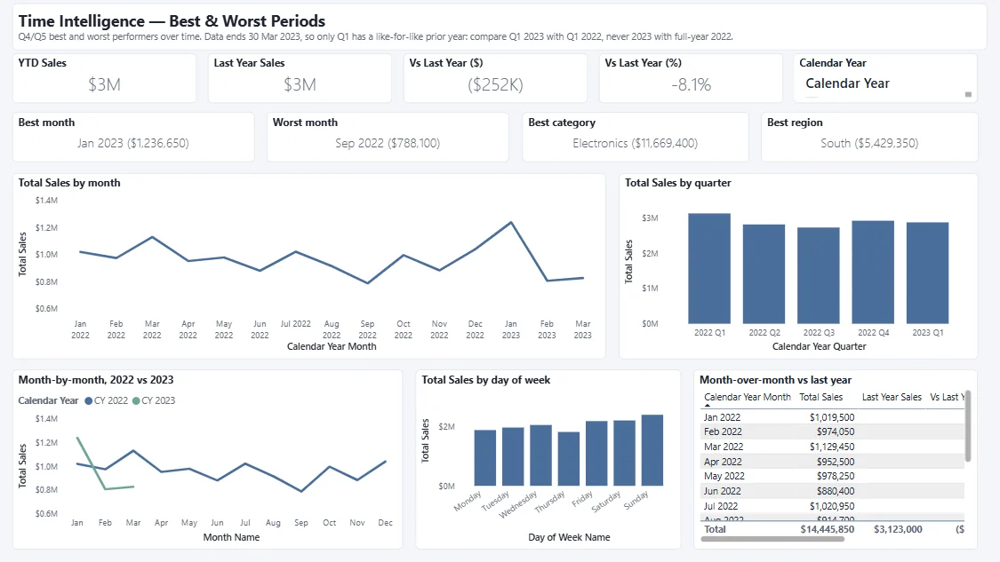
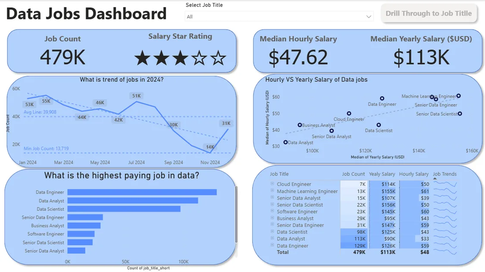
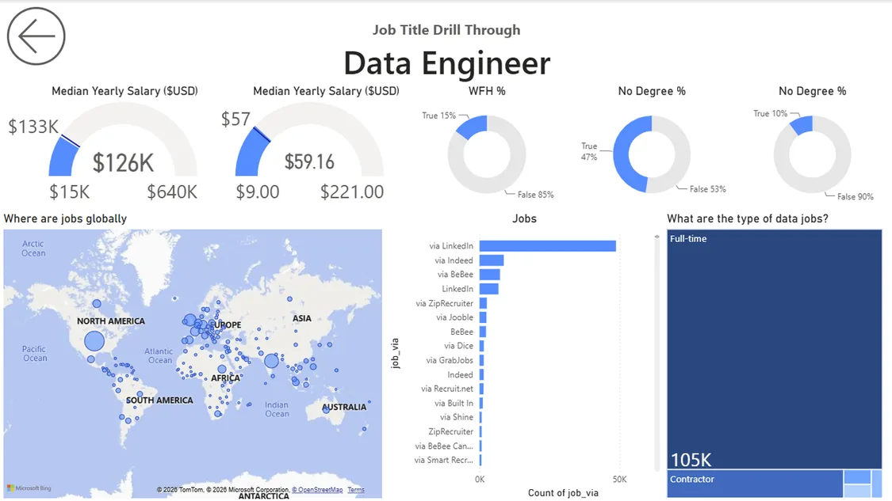

Jul 2023 – Jul 2025
Master of Artificial Intelligence
Monash University, Clayton
Distinction · WAM 78.75
Deep learning, machine learning, NLP, algorithms, project management. Member of Monash DeepNeuron; Monash Graduate Association volunteer.
AI & data · Melbourne
I'm a Master of AI graduate from Monash with a background in software, machine learning and data engineering. I like the whole path: modelling the data, building the model, and shipping the app or dashboard that puts it to work.
About me
I studied Electronics and Instrumentation alongside a Master's in Economics at BITS Pilani, which left me equally at home with circuits, statistics and business problems. Internships at Blue Yonder and UBS pulled me towards data: designing databases for supply-chain analytics, then automating financial data work and building stress-testing models.
I moved to Melbourne for a Master of Artificial Intelligence at Monash, graduating with Distinction in 2025. My capstone, Connect-Able, was built in an Agile team with industry stakeholders from Coles and Flybuys, and I've since brought it back as a live, self-hosted app.
Today I work on NBN support at Telstra, where diagnosing faults across complex network setups keeps my root-cause instincts sharp. I'm looking for roles in data, AI and software where I can build things end to end.
Melbourne, Australia
Mumbai, India
Bangalore, India
Jul 2023 – Jul 2025
Monash University, Clayton
Distinction · WAM 78.75
Deep learning, machine learning, NLP, algorithms, project management. Member of Monash DeepNeuron; Monash Graduate Association volunteer.
Jul 2018 – Jun 2023
BITS Pilani, K. K. Birla Goa Campus
First Class · WAM 73
Statistics, econometrics, business valuation, financial management. Student Faculty Council member for Marketing Research.
Selected work
Three builds I'm proud of, from live data pipelines and AI to business dashboards.


A live web app that helps older Melburnians find events at step-free venues, with the weather, a Gemini-written checklist, walking maps and fall-prevention advice. Built with Coles and Flybuys stakeholders, now self-hosted.


A six-page Power BI report on fifteen months of retail sales: executive KPIs, products, stores, customers and year-over-year trends, built on a star schema and checked against the raw data before any number was quoted.


A Power BI report on 478,895 data job postings from 2024: which roles pay best, which skills employers ask for, how much is remote, plus a drill-through page for any single role. The data was checked for gaps before any number was quoted.
Skills
Data and AI, end to end: from cleaning and modelling the data, through analysis and machine learning, to dashboards and apps people actually use.
Automated 85% of manual financial data processing at UBS with Python and R.
MS in Artificial Intelligence, Monash (Distinction). ML models with 98% back-test accuracy at UBS.
Cut query latency 40% on Oracle Cloud for supply-chain BI at Blue Yonder.
Shipped a Flask, Vue.js and Gemini API web app on AWS with Coles and Flybuys stakeholders.
79% first-time resolution at Telstra, 15% above the team average.
Contact
Hiring for data, AI or software, or want to collaborate? Send me a message and I'll get back to you.